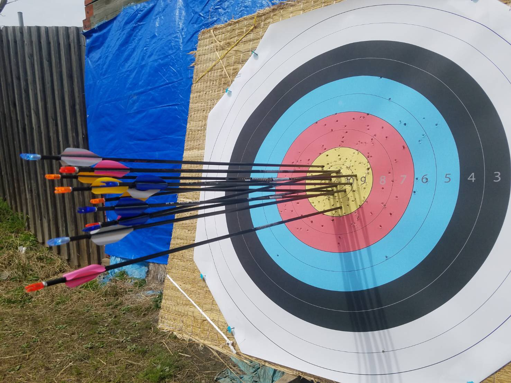
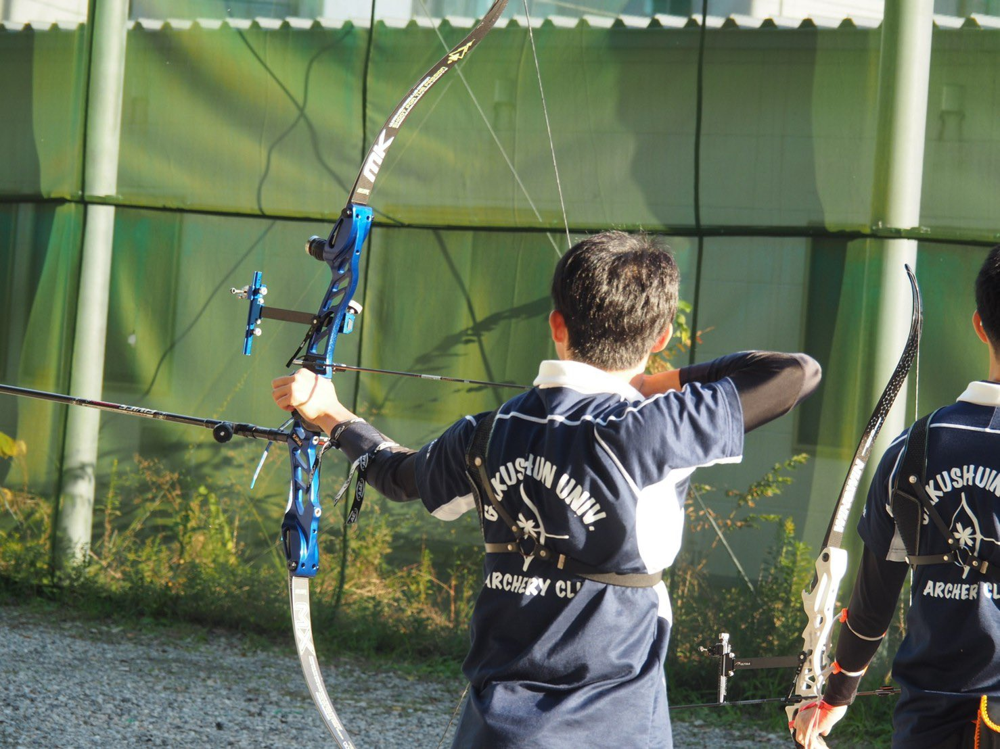
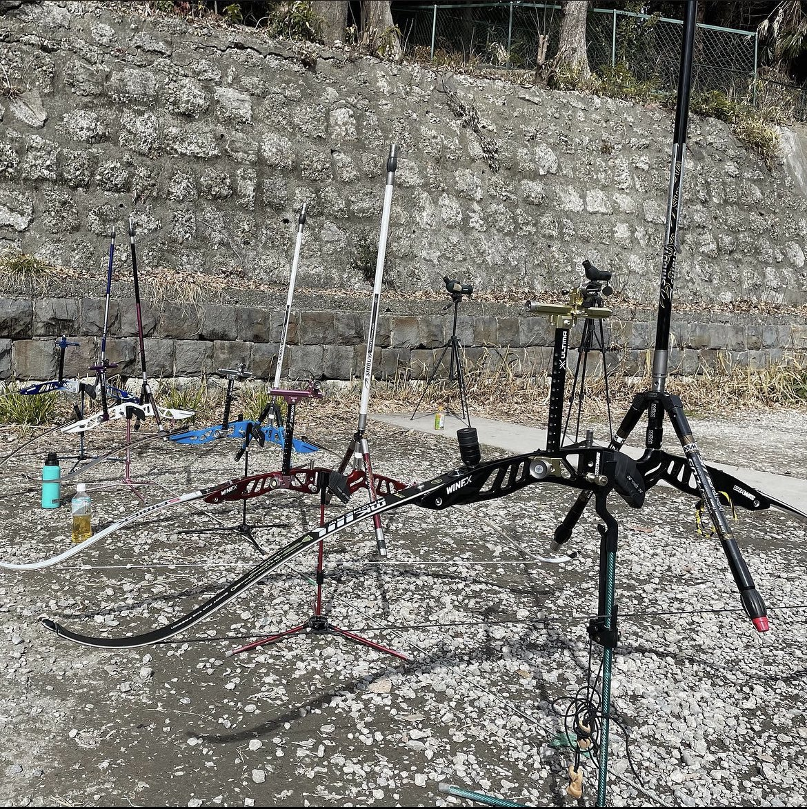
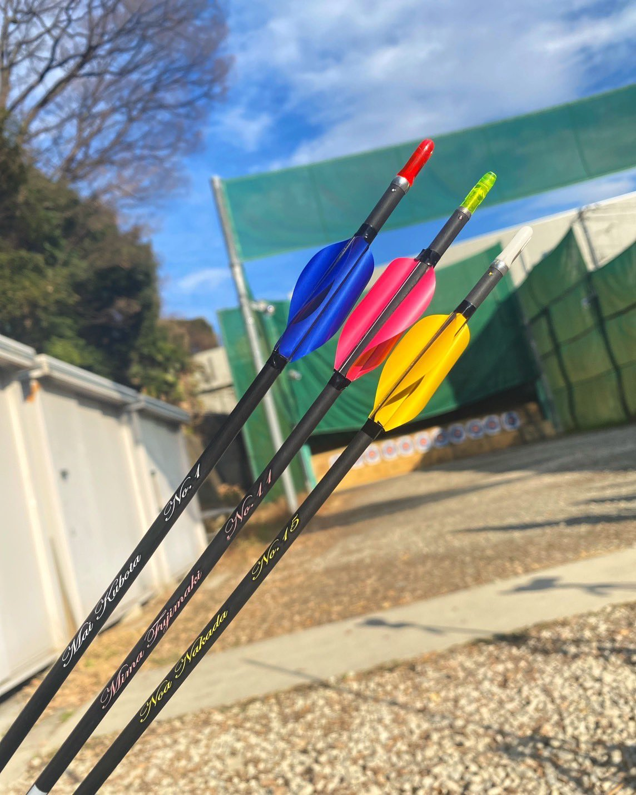

ARCHERY
ARCHERY
アーチェリーは、弓で矢を射って的の中央によりたくさんの矢を集め、最終的な得点を競うスポーツです。
大学の試合では基本的に1人72本を射ち、より高得点を獲得した方が勝利となります。的の中央は10点なので720点満点です。

FORMAT
大学でのアーチェリーの試合は基本的にSH(ショートハーフ)という形式で行われます！
SHとは、50mと30mの距離からそれぞれ36本射ち、72本の合計得点を競う形式です!

BOW
写真でもわかる通り全く同じ弓を持っている人はおらず皆思い思いの弓を持って練習しています。
皆さんも射場に来た際にはぜひ部員に弓のこだわりを聞いてみてください🎈

ARROW
アーチェリーでは主にアルミやカーボンでできた矢を様々なパーツが組み合わさってできた弓で射ちます。更には矢を入れるクイーバーの色や矢の羽の色まで自分で選ぶことができます🎨
この道具でも自分の個性を出すことが出来るということはアーチェリー部の大きな魅力ですね🌟
